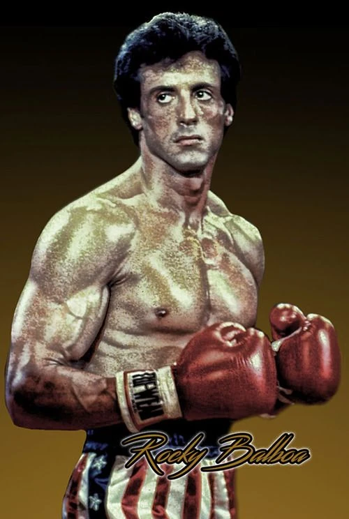

Meanwhile, on the professional boxing circuit, Mason "The Line" Dixon reigns as the undefeated yet unpopular heavyweight world champion, often ridiculed for having never fought a true contender. This leads to tension with the public and his promoters and encourages him to return to his roots: the small gym he first trained in and his old trainer, who sagely tells him that, inevitably, he will earn back his respect through a true opponent that will test him. ESPN later broadcasts a computer simulation of a fight between a younger Rocky and Mason – likened to a modern-day version of The Super Fight – that ends in a disputed KO victory for Balboa, further riling the champ. In contrast, the simulation inspires Rocky to take up boxing again, an intention that goes public when he successfully renews his boxing license. Dixon's promoters pitch the idea of holding a charity exhibition bout at the Mandalay Bay Resort and Casino in Las Vegas to bolster Dixon's floundering popularity. In the midst of this chaos, Paulie is laid off from his job. With some hesitation, both men agree to the match, creating a media buzz that stabs at Rocky's age and Dixon's credibility. Robert later makes an effort to discourage Rocky from fighting, blaming his own personal failings on his father's celebrity shadow, but Rocky rebukes him with a rousing speech: in order to succeed in life, "it ain't about how hard you hit – it's about how hard you can get hit and keep moving forward!"; blaming others is the coward's way. The next day, father and son meet over Adrian's grave and reconcile; Robert has quit his job to be at Rocky's side.
